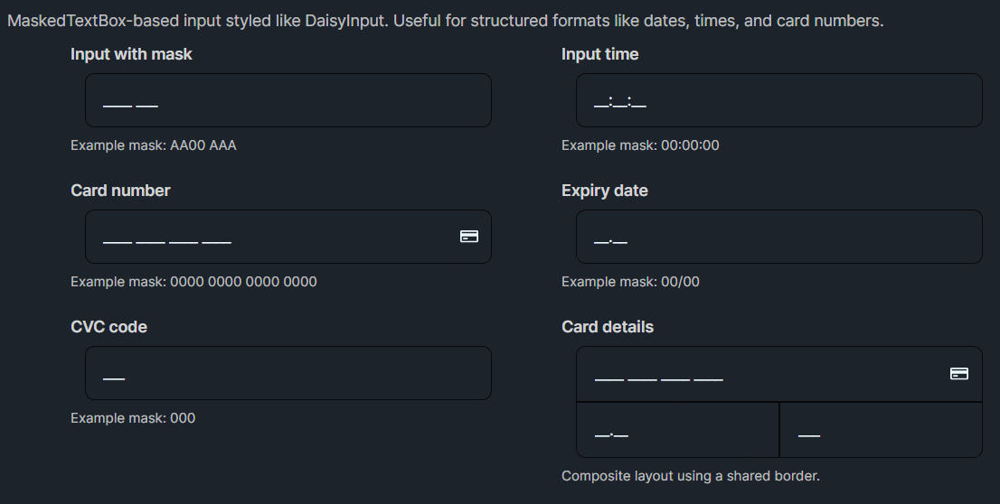

DaisyMaskInput is a MaskedTextBox styled like DaisyInput, intended for structured input such as times, dates, IDs, and payment details. It supports the same Daisy input API (variants, sizes, labels, helper text, and icons) and adds masked-editing via the built-in Mask property.
You can set the mask manually using Mask="...". The mask format and behavior is provided by the underlying MaskedTextBox control.
Alternatively, use Mode="..." to apply a preset mask (and an example watermark). When Mode != Custom, DaisyMaskInput sets Mask automatically and sets Watermark automatically if it was empty. Those auto-watermarks are localized via FloweryLocalization.
<!-- Preset modes (Mask + localized Watermark are applied automatically) -->
<custom:DaisyMaskInput Mode="AlphaNumericCode" />
<custom:DaisyMaskInput Mode="Timer" />
<custom:DaisyMaskInput Mode="CreditCardNumber" EndIcon="{StaticResource DaisyIconCard}" />
<custom:DaisyMaskInput Mode="ExpiryDate" ExpiryYearDigits="2" Label="Expiry date" />
<custom:DaisyMaskInput Mode="Cvc" />
<!-- Custom mask (manual Mask/Watermark) -->
<custom:DaisyMaskInput Mode="Custom" Mask="AA00 AAA" Watermark="AB12 CDE" />Mode for common structured formats; it keeps Mask (and the default example Watermark) consistent.Watermark="..." explicitly (this disables the auto-watermark behavior).DaisyInput for free-form text.Variant="Error" / HelperText="..." for validation feedback.